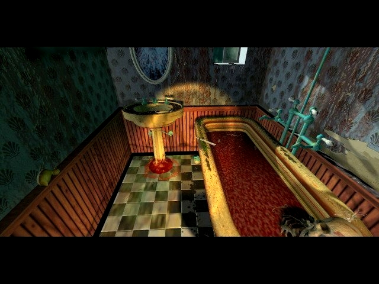

"The ipsy dipsy spider went up the waterspout."
Screwing around with game-files, Bones you have such a way with words. Why, thank you Bones. Don't mention it Bones. Back to sanity for a second. Daniel Nolan discovered a lot of things if you delete something and give it a new name. It's fun and you will see something that isn't in the game. But make a copy of the game before you do it, you might end up with a game that will not run anymore. So goof around with a backup copy on your harddrive.
If you have the
original 11h demo, which came on the Virgin Demo CD
dispatched to retailers late 1994, then copy DEMO.GRV
from your \t7g directory to the \id\11hdemo directory and
type V.EXE @ You'll see some cool
stuff out of the final 11th Hour release that wasn't
planned to be shown. C:\GAMES\11H>
v32.exe d:\media\dvmod(number).gjd C:\GAMES\11H>
v32.exe d:\media\final_hr.rol or the
music track you want to play. To play the clandestiny
anims insert CD #1 and type: